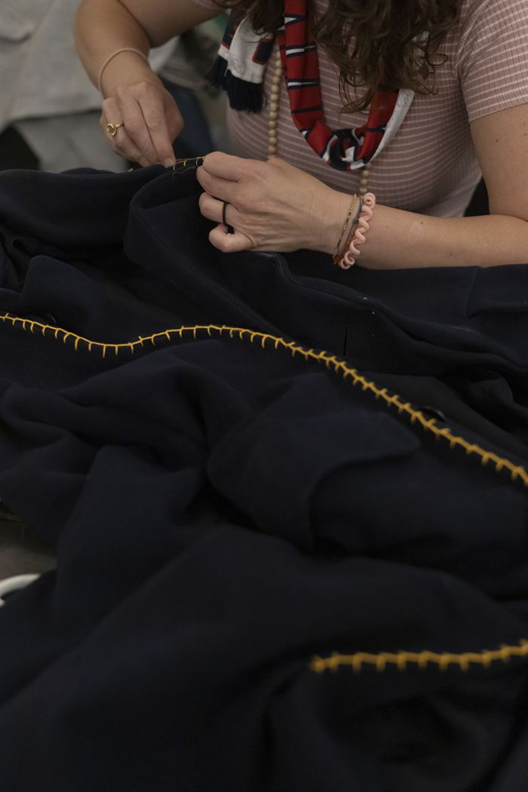

In breve. Un maglione che esce dalla lavatrice più piccolo può essere due cose diverse. Se è solo rimpicciolito ma la maglia è ancora morbida e si vedono i punti, si recupera quasi sempre: ammollo in acqua tiepida con un po' di balsamo per capelli, poi lo si allarga con le mani e si fa asciugare in piano. Se invece è infeltrito, cioè duro, spesso e con i punti che non si distinguono più, le fibre si sono incastrate tra loro e non tornano indietro: si può guadagnare qualche centimetro, non di più. Ma la lana infeltrita è un tessuto bellissimo da cucire, perché non si sfilaccia.
Rimpicciolito o infeltrito? Il primo controllo
Prima di provare qualsiasi rimedio conviene capire cosa è successo, perché sono due danni diversi.
| Rimpicciolito | Infeltrito | |
|---|---|---|
| Al tatto | Morbido, ancora elastico | Rigido, spesso, «cartonato» |
| La maglia | Si vedono bene i punti | I punti si confondono, la superficie è pelosa e compatta |
| Se lo tiri | Si allunga e torna un po' indietro | Si allunga pochissimo |
| Si recupera? | Quasi sempre, del tutto o quasi | Solo in parte |
Spesso le due cose succedono insieme: il maglione si è ristretto e in alcune zone, di solito sotto le ascelle e sui polsi, ha cominciato a infeltrire. In quel caso si recupera la parte morbida e si accetta che le zone dure restino un po' più strette.
Perché la lana infeltrisce
Ogni fibra di lana, vista al microscopio, è coperta di piccole squame, come le tegole di un tetto. Con l'acqua calda, il sapone e lo sfregamento, le squame si aprono, le fibre scivolano in una sola direzione e si agganciano l'una all'altra. Più la lavatrice gira e più si stringono. Quando il maglione si asciuga, sono rimaste incastrate.
È lo stesso principio con cui da secoli si fa il feltro e la lana cotta: lo stesso danno, fatto apposta, dà un tessuto compatto, caldo e che non si sfilaccia.
Il ritiro semplice invece è un'altra cosa. Durante la lavorazione il filo viene tirato e messo in tensione; l'acqua calda lo rilassa e il maglione si accorcia. Lì le fibre non sono incastrate: basta ridare forma al capo da bagnato.
Le cause più comuni, insieme o da sole:
- acqua calda, o uno sbalzo tra acqua calda e fredda;
- centrifuga e sfregamento con gli altri capi nel cestello;
- detersivo normale, che non è fatto per la lana;
- l'asciugatrice, che unisce calore e movimento.
Come recuperare un maglione rimpicciolito: il metodo del balsamo
Questo è il metodo che si trova più spesso, e quello che ha più senso: il balsamo rende le fibre più scivolose, così si possono allungare senza strapparle. Funziona bene sul maglione rimpicciolito, molto meno su quello infeltrito.
- Riempi una bacinella di acqua tiepida, non calda. Deve essere piacevole sulla mano.
- Sciogli due o tre cucchiai di balsamo per capelli. Va bene uno qualsiasi, meglio se semplice.
- Immergi il maglione e lascialo in ammollo circa mezz'ora, senza strofinarlo.
- Togli l'acqua senza strizzare. Premi il maglione contro il fondo della bacinella, poi arrotolalo dentro un asciugamano asciutto e premi ancora.
- Allargalo con le mani, ancora umido, poco alla volta: prima in larghezza, poi in lunghezza, poi le maniche. Tira con calma e in più punti, non solo dai bordi.
- Fallo asciugare in piano, su un asciugamano, lontano dal termosifone. Se hai un maglione della misura giusta, usalo come sagoma: appoggialo sotto e allarga quello piccolo fino a coprirlo.
- Non sciacquare il balsamo. Se dopo una giornata il maglione è ancora piccolo, ripeti.
Su internet si trovano anche il bicarbonato, l'aceto e il freezer. Li cito perché sono tra le ricerche più frequenti, ma non ho trovato prove serie che funzionino meglio del balsamo. Il principio che conta è sempre lo stesso: fibre bagnate, scivolose e allungate con pazienza.
Cosa evitare. Non metterlo in acqua calda per «ammorbidirlo», non stenderlo appeso (il peso dell'acqua lo deforma in modo irregolare), non asciugarlo sul termosifone.
Se è infeltrito davvero: cosa farne
Se dopo due ammolli il maglione è ancora duro e spesso, non tornerà più quello di prima. Qui per me comincia la parte bella.
La lana infeltrita è un tessuto. Ha tre qualità che pochi tessuti hanno insieme:
- si taglia senza fare l'orlo, perché i bordi non si sfilacciano;
- è spessa e calda, quindi protegge dal calore e dal freddo;
- è morbida ma tiene la forma, si può cucire anche a mano.
Prima di tagliare, se il maglione è solo un po' infeltrito, si può finire il lavoro: un altro lavaggio a 60 gradi lo rende più compatto e regolare. Se lo fai, fallo da solo o con altra lana, mai con capi delicati.
Otto cose da cucire con un maglione infeltrito
- Presine e sottopentola. Due o tre strati sovrapposti, cuciti lungo il bordo. È la prima cosa che consiglio, perché perdona tutti gli errori.
- Sottobicchieri. Cerchi o quadrati di circa 10 cm. Con un maglione a righe vengono già decorati.
- Muffole e manopole. Si disegna la mano su un foglio, si aggiunge un centimetro tutto intorno e si taglia due volte. Il polsino del maglione diventa il polsino della muffola.
- Cuscino. Il davanti del maglione, così com'è, con il disegno della maglia.
- Toppe per gomiti e ginocchia. La lana infeltrita è perfetta per coprire un buco su un altro maglione o sui pantaloni dei bambini.
- Custodie. Per gli occhiali, il telefono, gli aghi: un rettangolo piegato e cucito su due lati.
- Pantofole. Due strati per la suola, meglio se con una base antiscivolo sotto.
- Fiori e spille. Con i ritagli più piccoli: si taglia una spirale e si arrotola.
Per cucire a mano i bordi uso il punto festone: copre il taglio, unisce due strati in un passaggio solo e diventa parte del disegno. Se vuoi un filo che si veda, scegli un colore in contrasto.

Come evitare che succeda di nuovo
- Guarda l'etichetta: il simbolo della mano nella bacinella vuol dire lavaggio a mano.
- Se lavi in lavatrice, usa il programma lana, acqua fredda o al massimo 30 gradi, centrifuga bassa.
- Usa un detersivo per lana e non lasciare il maglione in ammollo per ore.
- Stendi sempre in piano.
- La lana non va lavata spesso: molte volte basta arieggiarla all'aperto.
Domande frequenti
Un maglione infeltrito si può recuperare?
Dipende. Se è solo rimpicciolito e la maglia è ancora morbida, si recupera quasi sempre con un ammollo tiepido e un po' di balsamo, allargandolo da bagnato. Se è infeltrito, cioè rigido e con i punti che non si vedono più, si guadagna solo qualche centimetro: le fibre si sono incastrate in modo permanente.
Il balsamo per capelli funziona davvero sul maglione infeltrito?
Aiuta, perché rende le fibre più scivolose e permette di allungarle. Funziona bene sul ritiro semplice, poco sull'infeltrimento vero. Il risultato dipende da quanto è compatta la lana.
Che differenza c'è tra un maglione rimpicciolito e uno infeltrito?
Il maglione rimpicciolito si è accorciato perché il filo si è rilassato, ma i punti si vedono e la maglia è elastica. Quello infeltrito ha le fibre agganciate tra loro: è più spesso, più rigido, peloso, e i punti si confondono.
Perché il maglione si infeltrisce in lavatrice?
Per l'insieme di acqua calda, sapone e movimento. Le fibre di lana hanno piccole squame che si aprono e si agganciano l'una all'altra quando sfregano. Anche la centrifuga e l'asciugatrice contribuiscono.
Cosa posso fare con un maglione infeltrito?
Presine, sottobicchieri, muffole, cuscini, toppe, custodie, pantofole e fiori di stoffa. La lana infeltrita si taglia senza orlo perché non si sfilaccia, e si cuce facilmente anche a mano con il punto festone.
Anche i maglioni di cashmere e misto lana si infeltriscono?
Il cashmere sì, perché è una fibra animale con le squame come la lana. I misti con molta fibra sintetica infeltriscono meno, e in modo irregolare.
Ogni mese, nella mia newsletter, racconto un progetto da cucire con quello che c'è già in casa: tessuti, ritagli, vestiti che non si mettono più. Ti iscrivi qui sotto.